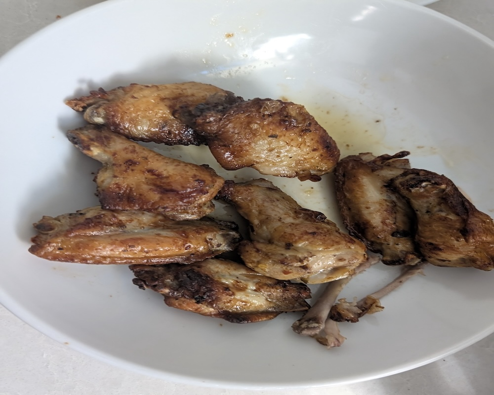

This image belongs to me. It was taken by me on my phone. All mine
About this recipe:
I chose this recipe because almost everytime I have hung out with my friends at my house we have had these same wings because we love them so much
The dish does not really have any signifigance to my family but we do eat it a lot and it is one of the few things that have meat that my younger sister eat, one of
the things my mom said today when I made them was These are so amazing Henry I
love when you make these
Some tips to follow when making this:
- Shake the wings a lot when putting seasoning on and you can add some butter to help it stick
- Pat down the wings in paper towels before seasoning to make them dry
- For better wings cut them yourself instead of getting them pre cut, for this recipe I use pre-cut wings but cutting them yourself is better.
| Ingredients | Amount |
|---|---|
| Pre-cut chicken wings | 12 |
| tajin + pepper | 1 tablespoon |
| olive oil | Just drizle a bit on |
Step by step recipe:
- pre-heat air fryer to 400
- Take your wings and put them in a large bowl
- Put on all your seasonings
- Mix them with your hands so they are covered
- Put them in the airfryer and drizzle with olive oil
- cook for 20 minutes, stoping and shaking them every 5 minutes
- after 15 minutes check if they are golden brown and crispy, take them out if they are because cook time can vary per air fryer
- put in a bowl with paper towels for the oil
- get some ranch or whatever you want and enjoy!
Estimated prep time: 30 minutes
Serving size: 3-4 people with 3-4 wings per person.